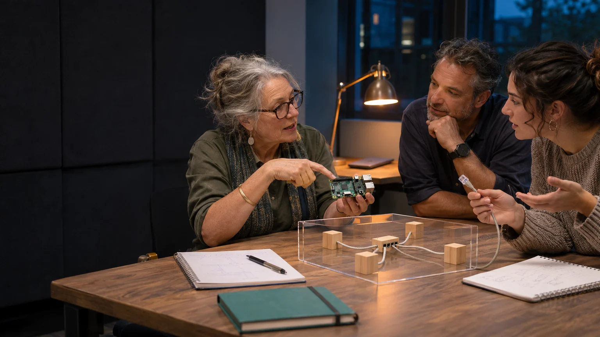

Words explained
A shared vocabulary
Definitions you can return to as the ideas become more connected.
An imagined adult learning session using tangible objects to explain unfamiliar ideas. AI-generated concept image. Image credits
- Artificial intelligence or AI
- Software that performs tasks such as recognising patterns, working with language or producing an answer. Its capabilities depend on its design, training, tools and the setting in which it is used.
- AI alignment
- Work to make an AI system behave consistently with intended purposes and limits. The plan also asks how people clarify and revise those purposes together.
- Superintelligence or SI
- A proposed level of AI capability that would substantially exceed human capability across many fields. Future scenarios explore possible consequences and depend on assumptions.
- Compute
- The processing work computers can do. Chips, memory, electricity, cooling and communications make that work possible.
- AI model
- Learned software that uses patterns developed during training. Running an existing model to respond to a request is called inference.
- Open weights and open source
- Open weights make a model’s learned numerical parameters available under a licence. A broader open-source release can also provide code and other material needed to inspect, reproduce or change it. The actual licence and released materials matter.
- Sovereign compute
- Practical authority over computing capacity, including who controls access, data, software choices, maintenance and decisions about its use.
- The Missing Middle
- Shared computing between personal devices and very large data centres, with local access, skills and ownership. The Australian proposal describes 3,000 sites.
- An Aura
- A proposed personal workspace connecting chosen records and AI tools. The person can decide what to keep, correct, use or share.
- Verse Box
- A proposed portable setting for a supported introduction to an Aura, helping a visitor complete a useful task and take their own work away.
- Aura Genesis
- A proposed longer learning process in which a person and their Aura build a useful record through experience, reflection and correction.
- The Geode
- A proposed adult research setting within Genesis, bringing together a chamber, breathing equipment, sensory experiences and reflection. Its health research requires its own clinical and ethical design.
- Healthy De-Slop
- Work to reduce avoidable strain through food, movement, rest, reflection and connection. The expanded idea includes making household bills and institutional information easier to understand and challenge.
- Co-operative
- An organisation owned by its members for a shared purpose, with arrangements giving members a say in its operation.
- The Braided Economy
- The proposed use of financial records, contribution records and accounts of outcomes together, so communities can see money, voluntary work and what actually changed.
- C-Hour
- One verified hour of voluntary human contribution in the proposed community record. It has no cash value.
- A digital twin
- A model or representation of a person, place or system that can be used to explore a question. Its usefulness depends on how it represents the real thing and how its results are checked.
- Web3 Sensorium
- A proposal for sharing inspectable models, measurements and scientific debate across independently operated systems, with records of sources and corrections.
- GAJRA Earth
- The proposed Global Association for Joyful Responsible Abundance on Earth. A gajra is a garland, used here to express connection among distinct, locally rooted associations.
- A conditional scenario
- An account of what could happen if specified assumptions hold. Changing the assumptions changes the result. It can help expose choices and dependencies without claiming to know the future.
- A Protopian Gambit
- An opening move that improves something now and creates more worthwhile possibilities for the next move. It is also the name of Luke’s 22-song album.